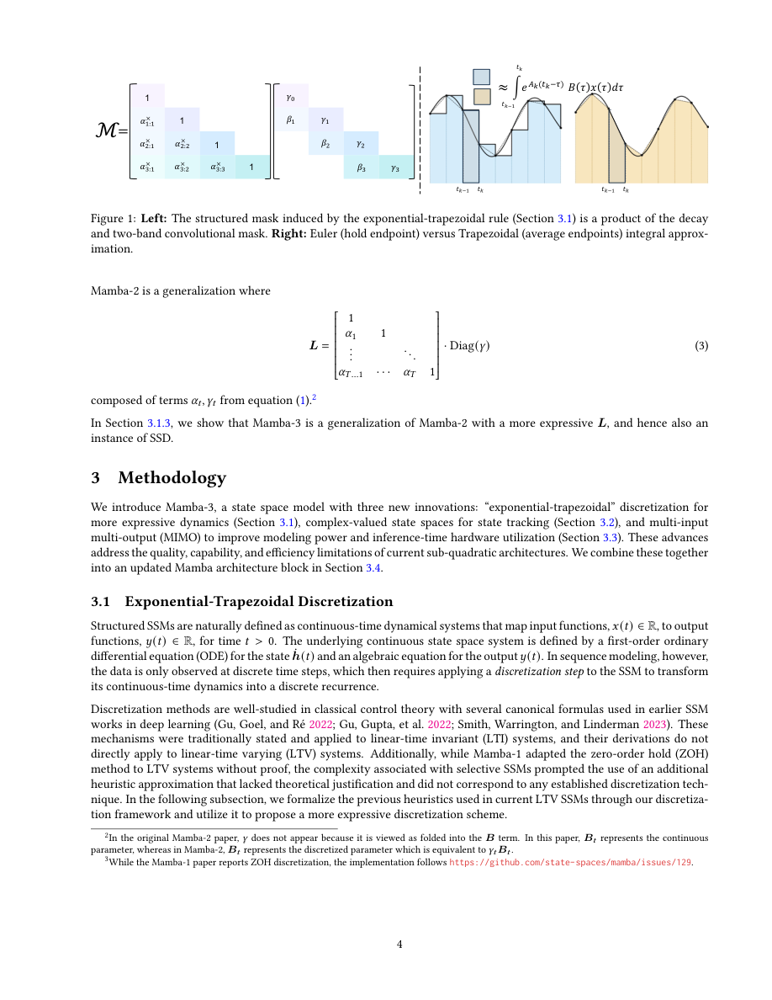

#1
★ 9/10
Mamba-3: Improved Sequence Modeling using State Space Principles
Mamba-3：基于状态空间原理的改进序列建模

图 Figure · Page 4 of paper
🎯 Mamba-3用三项SSM改进突破线性模型质量瓶颈
Mamba-3 advances linear sequence models with three SSM-inspired improvements, beating prior models in quality and efficiency.
❓ Problem · 解决什么问题
大型语言模型（LLM）主要依赖Transformer架构，但其推理计算复杂度是序列长度的平方，内存占用也随之线性增长，推理成本极高。虽然已有研究提出了"亚二次"线性模型来降低计算量，但这些模型往往在模型质量上做出妥协，尤其在状态追踪等任务上表现欠佳，且理论上的线性推理在实际硬件上也并不高效。
Transformer-based LLMs suffer from quadratic compute and linear memory costs at inference time, making them expensive to deploy at scale. Existing sub-quadratic linear models reduce these costs but sacrifice model quality — particularly on tasks like state tracking — and their theoretical efficiency often doesn't translate to real hardware gains.
⚙️ Method · 方法
Mamba-3从"以推理为核心"的视角出发，引入了三项关键改进：第一，基于SSM离散化推导出表达能力更强的循环结构；第二，采用复数值状态更新规则，使模型能够追踪更丰富的状态信息；第三，引入多输入多输出（MIMO）公式，在不增加解码延迟的前提下提升模型性能。三项改进结合架构层面的优化，共同构成了Mamba-3模型。
Mamba-3 introduces three core methodological improvements grounded in the state space model (SSM) perspective. First, it derives a more expressive recurrence from SSM discretization principles. Second, it adopts a complex-valued state update rule to enable richer state tracking capabilities. Third, it introduces a multi-input, multi-output (MIMO) formulation that boosts model performance without adding decode latency. These are combined with broader architectural refinements to form the full Mamba-3 system.
📐 Key Formulas · 关键公式
\[h_t = \bar{A} h_{t-1} + \bar{B} x_t, \quad y_t = C h_t\]
💡 SSM的核心离散化循环公式：隐藏状态 $h_t$ 由上一时刻状态和当前输入共同更新，输出 $y_t$ 由当前状态线性映射得到。Mamba-3从此出发推导了更强的循环表达式。
The core discretized SSM recurrence: the hidden state $h_t$ is updated from the previous state and current input, and the output $y_t$ is a linear readout. Mamba-3 derives a more expressive recurrence from this foundation.
\[h_t \in \mathbb{C}^N\]
💡 Mamba-3采用复数值隐藏状态（而非实数值），使模型能够表达更丰富的周期性和旋转动态，从而大幅提升状态追踪能力。
Mamba-3 uses complex-valued hidden states (rather than real-valued), enabling the model to represent richer periodic and rotational dynamics, significantly improving state tracking performance.
📊 Results · 结果
在1.5B参数规模下，Mamba-3相比次优模型（Gated DeltaNet）平均下游任务准确率提升了0.6个百分点；其MIMO变体进一步提升1.2个百分点，累计总提升达1.8个百分点。在状态大小实验中，Mamba-3仅使用Mamba-2一半的状态维度，却能达到与Mamba-2相当的困惑度（perplexity），在检索、状态追踪和语言建模等任务上均有显著提升，有效推进了性能与效率的帕累托前沿。
At the 1.5B parameter scale, Mamba-3 improves average downstream accuracy by 0.6 percentage points over the next best model (Gated DeltaNet), with its MIMO variant adding a further 1.2 points for a total gain of 1.8 percentage points. Notably, Mamba-3 achieves comparable perplexity to Mamba-2 while using only half the state size, demonstrating improved parameter efficiency. Gains are observed across retrieval, state-tracking, and general language modeling benchmarks, advancing the performance-efficiency Pareto frontier.
🌟 Why It Matters · 为什么重要
随着"推理时扩展计算"成为提升LLM性能的重要方向，推理效率与模型质量的平衡变得至关重要。Mamba-3证明了线性模型不必以牺牲质量为代价换取效率，为构建既高效又强大的下一代语言模型提供了新路径。
As inference-time compute scaling becomes a key lever for LLM performance, building models that are both high-quality and hardware-efficient is critical. Mamba-3 demonstrates that linear models can close the quality gap with Transformers without sacrificing efficiency, offering a viable path toward next-generation language models that excel on both fronts.